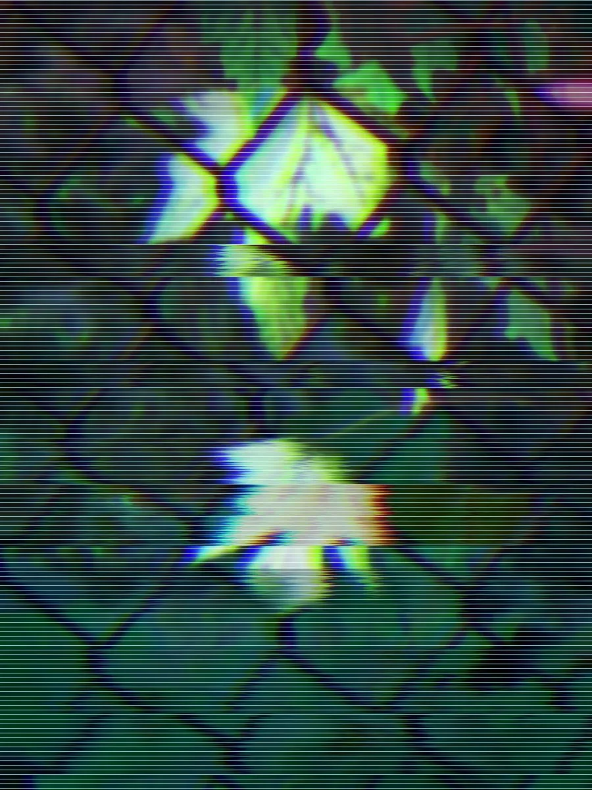
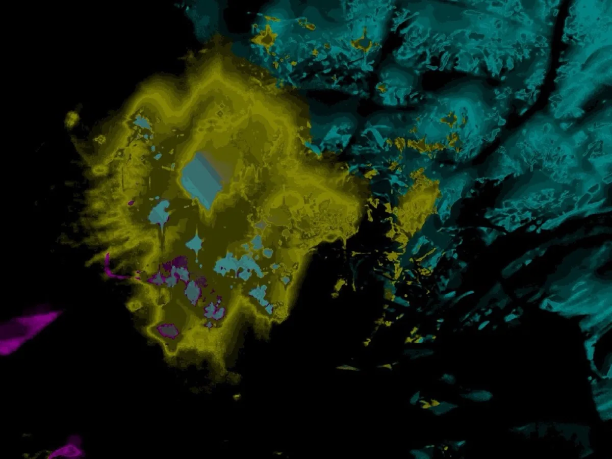
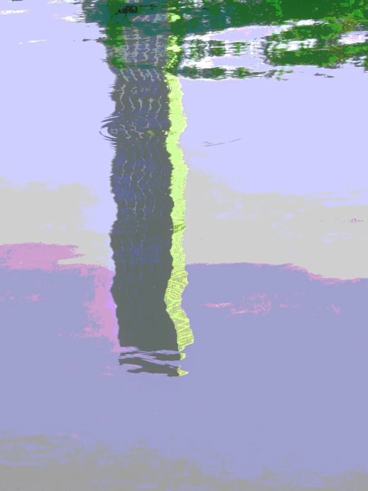
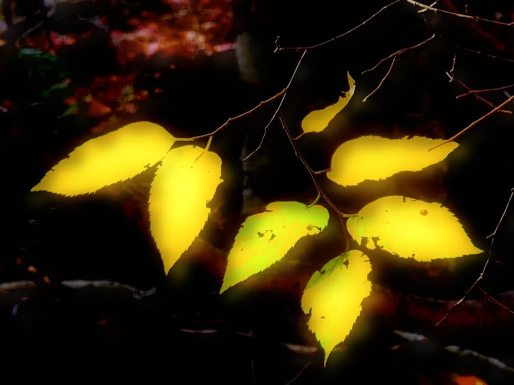

About
Press Go and Aimless draws a chain of random waypoints somewhere near you, then refuses to show you where they are. You get an arrow and a distance. You follow it. That's the whole interface.
It sounds like too little. In practice it's plenty: a walk you didn't plan, down streets you'd have skipped, with a few lines of verse and one photograph waiting at every stop. You come home with the shape of where you went.
01
A map turns you into a navigator. You watch the blue dot, you take the short way, you arrive. Aimless takes the map away, and the only thing left to look at is where you are.
Choose three, five or seven waypoints, how long you have, and a voice. Face the way you'd like to drift and press Go. The first waypoint lands roughly ahead of you. After that, the arrow decides.
Within about thirty metres a waypoint counts as reached. Phone GPS wanders, so the circle is generous. If a waypoint sits in a river or behind a fence, tap Close as I can get and the walk accepts where you stood.
The Situationists called it the dérive: drifting through a city and letting its currents steer. This is a dérive with a compass, and somebody else holding the dice.
02
At each waypoint, the voice you brought speaks: a title and three short lines, roughly a haiku.
None of the verses are written out whole. Each voice is four sets of 64 lines (titles, first lines, second lines, third lines) and the waypoint's coordinates pick one from each. That's 16.7 million possible verses per voice. Stand on the same spot and you'll get the same one.
Every line was written to stand on its own and to rub against whatever lands beside it. Most combinations make a strange kind of sense. Now and then one seems to have been waiting for you. That's partly chance and partly you: the walk supplies the lines, you supply the meaning.
Raymond Queneau published ten sonnets in 1961 with every line on its own strip of paper: a hundred thousand billion poems in one small book. Aimless cuts its voices into strips and lets the pavement shuffle them.
A random spot in New York, read by the voice you pick. On a walk, the spot is wherever the arrow took you.
03
One voice works differently. The Inner reads the I Ching.
It takes the last six decimal digits of a waypoint's latitude and longitude, pairs them crosswise, and turns each pair into a solid or a broken line. Six lines make a hexagram, one of the sixty-four. Each hexagram's judgement has been pressed into a haiku. The titles were passed through Greek and Japanese and came back changed.
Use it as an oracle if you like: carry a question for the length of the walk. Step a few metres and the hexagram changes, so it's the place that answers, not the app.
51.51060719513929, −0.1318628895242
Small force holds back much,clouds thicken, no rain falls yetthe west stays parched, still.
04
You can only take a photo once you've arrived. Retake it if you like, but the frame you replace is gone, and once you press OK the waypoint is done. No camera roll full of near-duplicates: three, five or seven pictures, each chosen on the spot.
It changes how you look. You arrive, read the verse, and start hunting for the picture that answers it.
Then the filters. Thirty-one come built in, from black and white, infrared and old film to effects with no name anywhere else. They run on the same image engine as Wobbletone, Aimless's companion app, where you can build your own from scratch and bring them over. Or tap Surprise: it rolls a random stack of effects nobody has seen before. Most rolls are ordinary. Keep the golden ones.




Four waypoints from one walk, four filters.
05
When you finish, the walk becomes a single web page: the line you actually walked, your photographs, the words. No scripts, nothing to install to open it. Email it, drop it in a group chat, put it on a website. It should still open in twenty years.
Pick a layout and filters before you export. You can also send a square card of your route over your favourite photo, publish the walk to your own Neocities site with a proper link preview, or download the route for a mapping app.
06
And if you'd rather ignore the arrow entirely, do. Start a walk, wander wherever you like, and tap Close as I can get whenever a spot earns a photograph. Some people call it punk mode. The app doesn't mind.
07
Aimless is a website that installs like an app. It's free. On your phone, open aimless.earth in Safari on iPhone or Chrome on Android, then add it to your home screen: it gets its own icon, runs full screen, and keeps your walks safer.
Point your phone's camera here,
or open aimless.earth.
08
Aimless is made by one person, Rob, in New York. It's free and open source, and there's no server behind it: no company collecting anything, just a website that runs on your phone. Wobbletone, its image-effects sibling, is free too.
If it gave you a good walk, the best thanks is to tell someone, or publish one of your walks so other people can see where Aimless took you.
Go nowhere. Somewhere.